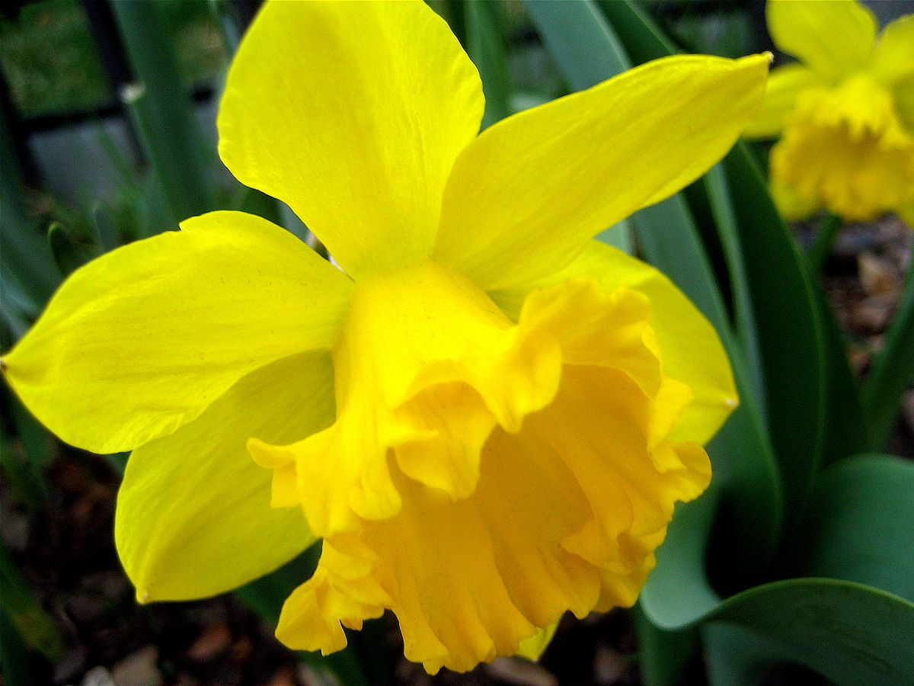
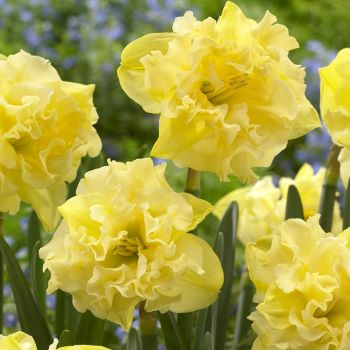
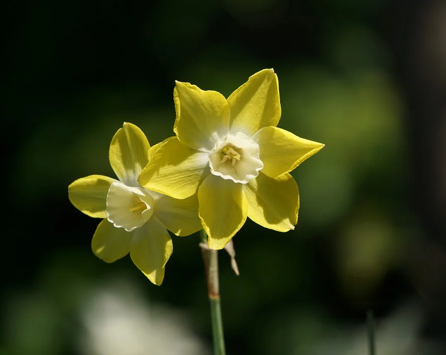
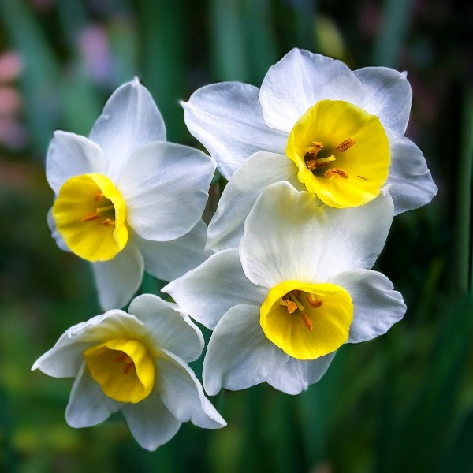

A Wikipédiából, a szabad enciklopédiából
| törzs: | zárvatermő |
| osztály: | egyszikűek |
| rend: | spárgavirágok |
| család: | amarilliszfélék |
| alcsalád: | amerilliszformák |
| nemzetség: | narcisseae |
| harangvirágú nárcisz |  |
| bókoló nárcisz | |
| kései nárcisz |  |
| sárga nárcisz |  |
| fehér nárcisz |  |
A nárciszfajok nagyrészt Eurázsia és Észak-Afrika szubtropusi, ritkásabban Eurázsia mérsékelt övi területein őshonosak; többségük az Ibériai-félszigeten, Franciaország Déli részén és az Appennini-félszigeten
mérgező növénya nárciszok mérgező növények. Minden nárciszfaj tartalmazza a mérgező likorin alkaloidot, elsősoban a hagymában, de a levelekben is
Napos helyet, valamint jó vízáteresztő képességű, tápdús talajt igényel. hagymáját szeptemberben vagy legkésöbb októberben kell a jól előkészített talajba elültetni. teljesen télálló, nem igényel takarást a fagyok ellen. elvirágzása után sosem szabad azonnal levágni a zöldjét, hanem meg kell várni, amíg magátol elszárad, mivel ellenkező esetben a hagymák rövidesen elpusztulnak. A hagymákat a szép virágzás érdekében 3-4 évente június végén érdemes felszedni.
a hagymasarjak leválasztásával
ha szeretnél venni katt ide
Készítette: Ricsi, idk